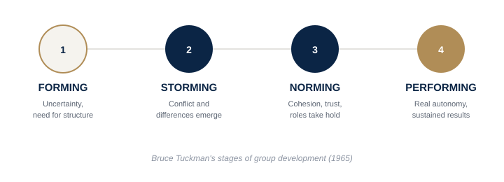

A team that executes with real autonomy, not one that needs you to approve every decision.
Delegate without losing quality control; identify why a team with strong individual talent doesn’t perform as a team; design meetings that generate decisions, not just status updates.
A group of strong individual performers who wait for your decision on everything isn't a high-performing team — it's a queue with your name on it. The real test isn't how good your people are, it's what still requires you in the room. Bruce Tuckman's classic research on group development shows every team moves through the same four stages — Forming, Storming, Norming, Performing — and most leaders get stuck because they treat conflict in Storming as a failure to fix quickly, instead of the necessary friction a team has to work through to reach real cohesion. Google's own two-year Project Aristotle study, covering 180+ teams, found the single biggest driver of high performance wasn't talent density — it was psychological safety: whether people felt safe taking risks and being wrong in front of each other.

The difference between a group of good professionals and a high-performing team → meeting rhythm as a team thermometer.
Extended video (15-25 min), an original PDF framework/checklist, a practical application workbook, and a curated summary of HBR and Scaling Up, Verne Harnish.
Free if you’re an active coaching client · Subscription access for the general public opens soon.